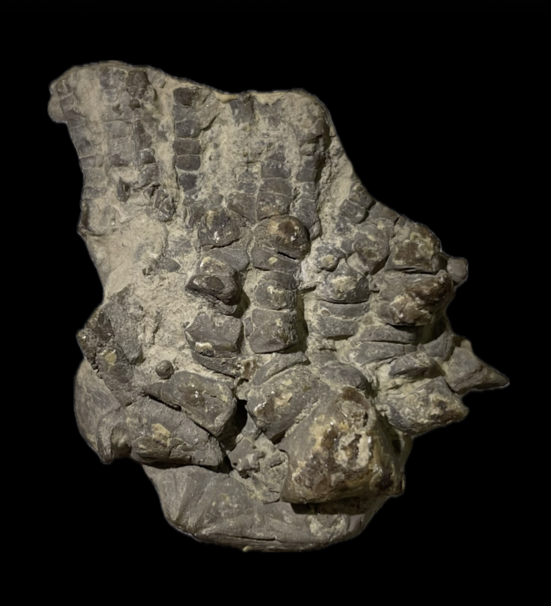

indet. Pirasocrinid
• Pennsylvanian
•
•
Size: 4.5 cm crown
Completely lacks provenance or identification, but has "2266" written on the back. Evidently a Pennsylvanian or Permian-aged Pirasocrinid with spinose primaxils.
|

|
Copyright © 2024 by Samuel Kim, all rights reserved